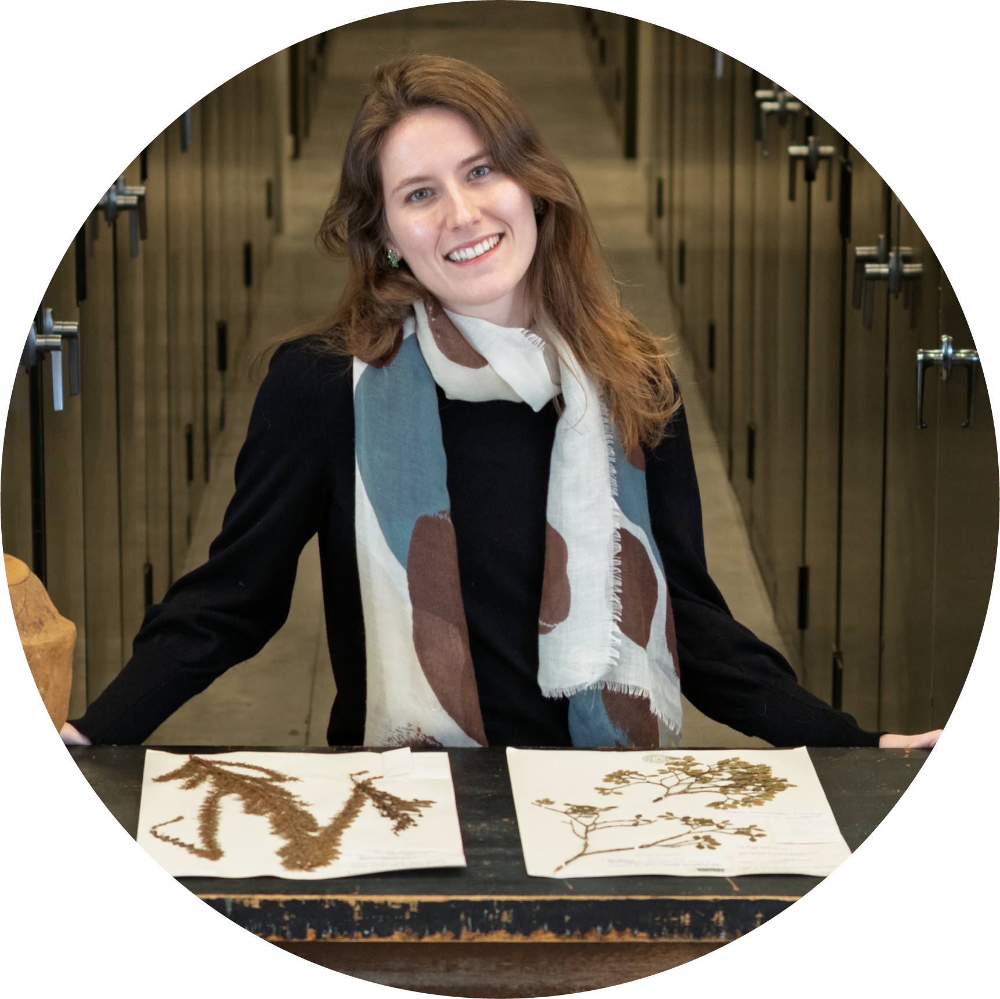

PhD in Ecology and Evolutionary Biology
2022 — presentUniversity of Michigan, USA

Plant Evolutionary Biologist
PhD Candidate, Ecology & Evolutionary Biology, University of Michigan
I am currently a PhD candidate in the Ecology and Evolutionary Biology department at the University of Michigan, USA. I study plant diversification and conservation, from naturally fragmented habitats in Brazil to dominant tree lineages of the Amazon rainforest. Read more about my research, browse my publications, or see photos from fieldwork.
University of Michigan, USA
University of Michigan, USA
Universidade de São Paulo, SP, Brazil